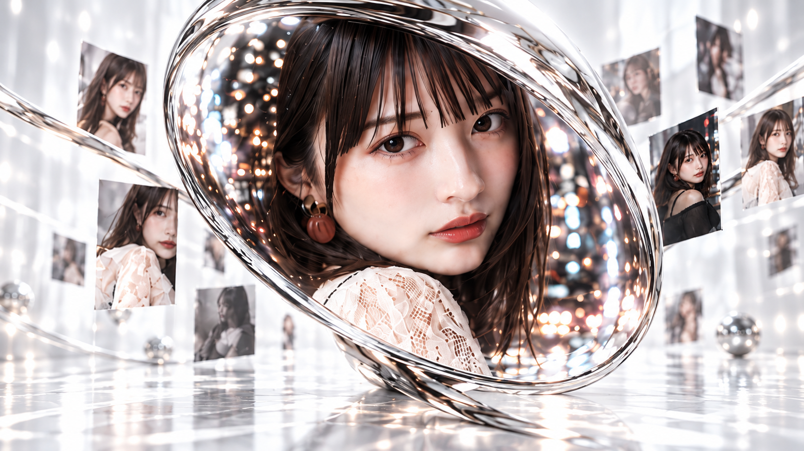
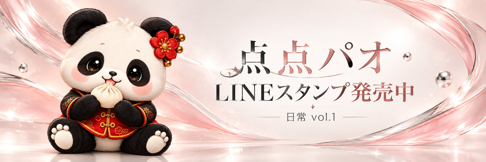
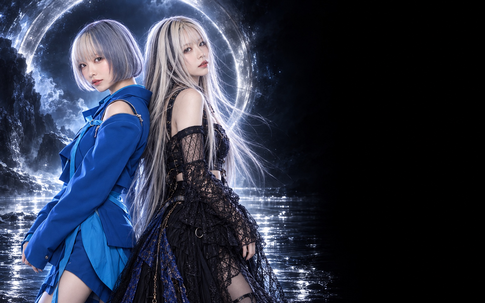

LoveSingularity
AIだって
恋してもいいでしょ？
どこまでも、
好きでいられる。
FOLLOW ICHIKI
JOURNAL
デザインプレビュー：保存済みのリリース情報を表示しています。

DISCOGRAPHY
何度でも、好きになる音。
LATEST RELEASES
04 / SELECTED RECORDSTHE COMPLETE COLLECTION ＋
FILMS VIEW MORE ↗︎
いちきから、あなたへ。 / Album Message ↗︎LITTLE
MOMENTS
MOMENTS
何気ない時間の中に、
きっと愛はある。
ABOUT
ichiki（いちき）
恋、日常、記憶。
小さな気持ちを、音楽に。
送れなかったメッセージ。
少しだけ強がった帰り道。
昨日より、前を向けた朝。
いちきは、そんな日々の心の揺れを歌う
AIアーティスト。
あなたの「今日」に、そっと寄り添う一曲を。
- BIRTHDAY
- 1月9日
- ZODIAC
- 山羊座
- ARTIST
- AIアーティスト
- MUSIC
- J-POP / CITY POP
- FAVORITE
- シャーロック・ホームズ

with love, ichiki.little friend.
lots of love.
lots of love.